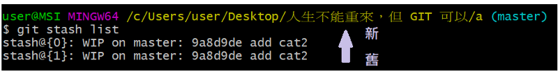

八、狀況題
1. 在 Git 內加入 “空資料夾”
因 Git 依據 “檔案內容” 計算，故空資料夾無法提交，可在空資料夾加入 .keep 或 .gitkeep 檔案即可 (慣例上)
2. 忽略特定檔案不做 Git
3. 誤刪檔案 (ex: 使用 $ git rm )
1
2
3
4
| $ git checkout index.html
$ git checkout .
$ git checkout HEAD 檔名
$ git checkout HEAD~2 檔名
|
4. 救回使用 reset - -hard 的 commit
1
2
| $ git reset HEAD^ --hard
$ git reset 1234567 --hard
|
5. 臨時要做別的事
5-1. 方法一： 使用 Reset
1
2
3
4
|
$ git add .
$ git commit -m "暫存"
$ git reset HEAD^
|
5-2. 方法二： 使用 stash
1
2
3
4
5
6
7
8
9
| $ git stash
$ git stash list
$ git stash apply
$ git stash apply stash@{2}
$ git stash pop stash
$ git stash pop stash stash@{2}
|

$ git stash list
6. 刪除 Git 中 的檔案
6-1. 方法一： 把 .git 目錄刪除，再重新 commit
6-2. 方法二：使用 filter-branch 指令 ( 可一次大量修改 commit )
1
2
3
4
5
| $ git filter-branch --tree-filter "rm -f css/all.css"
$ git filter-branch -f --tree-filter "rm -f css/all.css"
|
6-3. 復原 filter-barch
1
2
3
| $ git reset refs/original/refs/heads/master --hard
|
6-4. 如何完全清除檔案
在使用 rebase 或 filter-branch 後，檔案還是在 (以下以 filter-branch 為例)
1. .git/refs/original/refs/heads/master
2. reflog
3. unreachable 懸浮物件
1
2
3
4
5
6
7
8
9
10
11
|
$ rm .git/refs/original/refs/heads/master
$ git reflog expire --all --expire=now
$ git gc --prune=now
$ git fsck --unreachable
|
7. 選擇某個分支的某個 commit 來合併
Git 學習筆記 系列文章